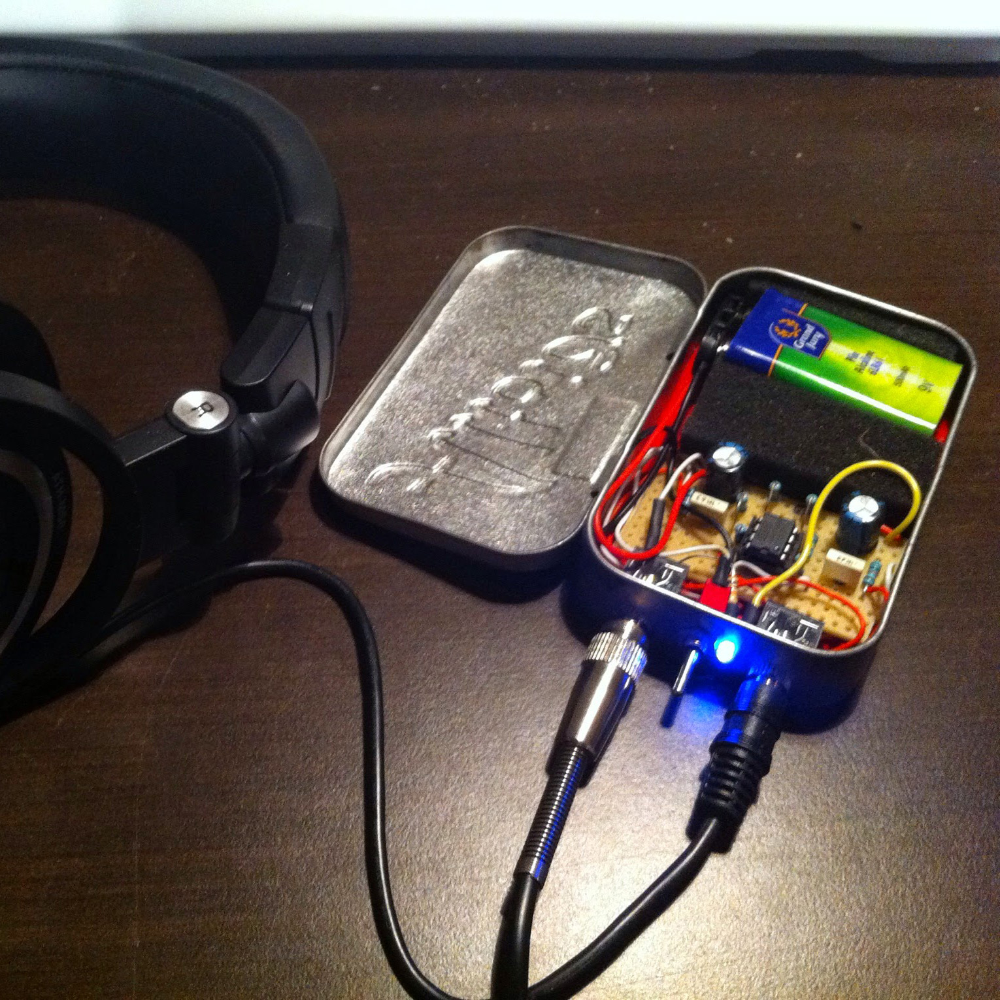
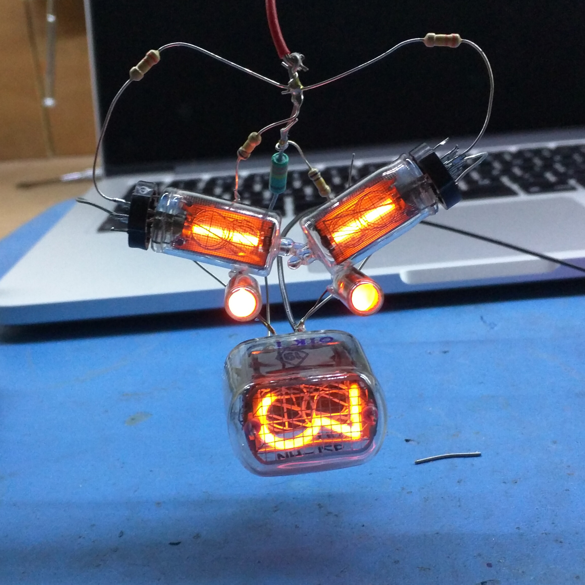
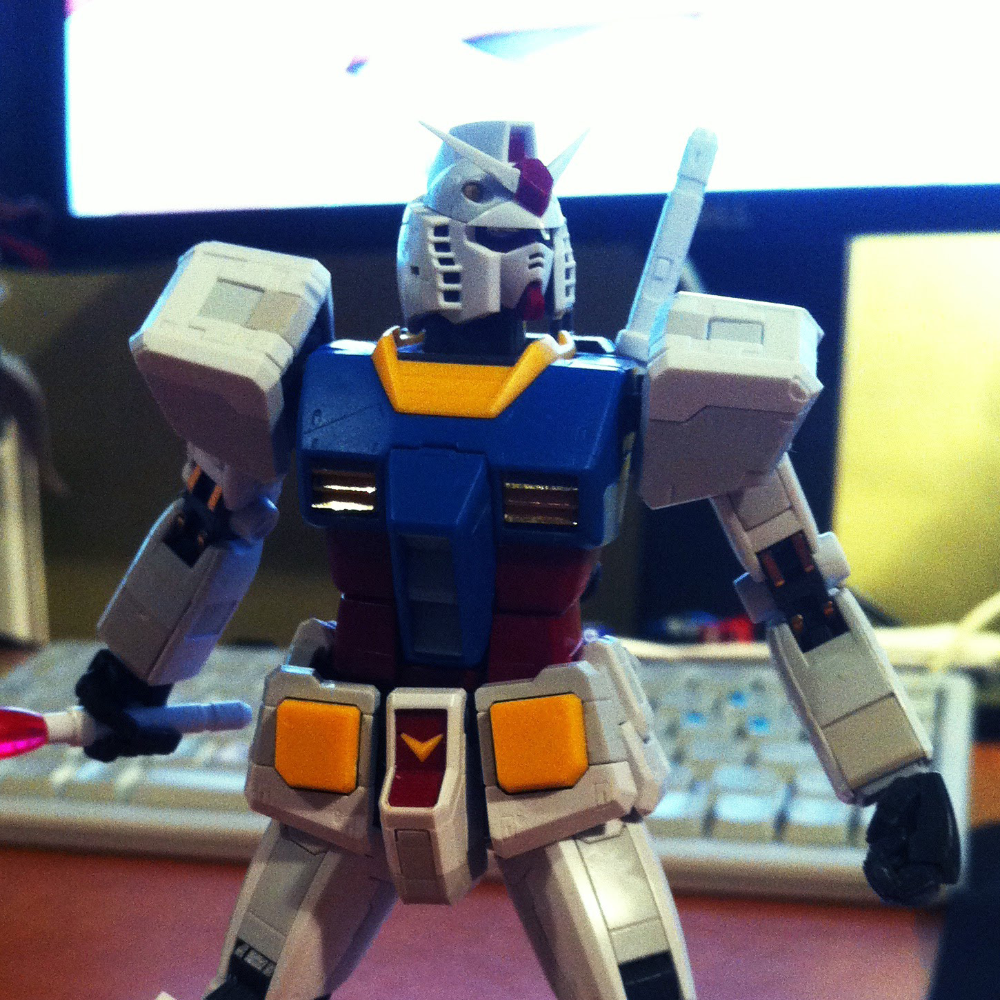
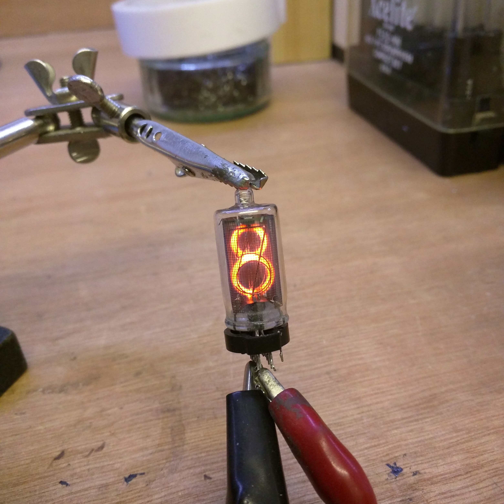

Welcome to my buildlog!
Here you will find the documentation of my projects and various other thing that are of interest to me.
About me
I am a passionate Electronics Engineer with a passion for old technology and connected devices (I hate the term IoT). I have too few projects documented and even fewer well documented. Creating this site in the hope to log the information in a more consistant matter as well as share my passion for old useless things.



